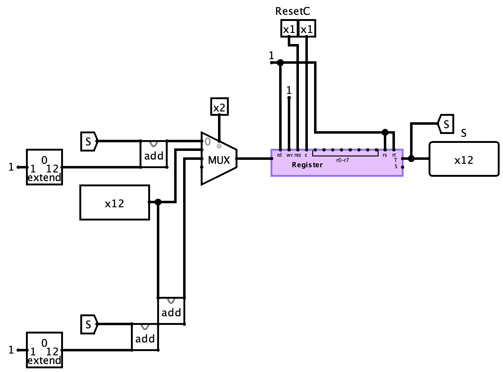
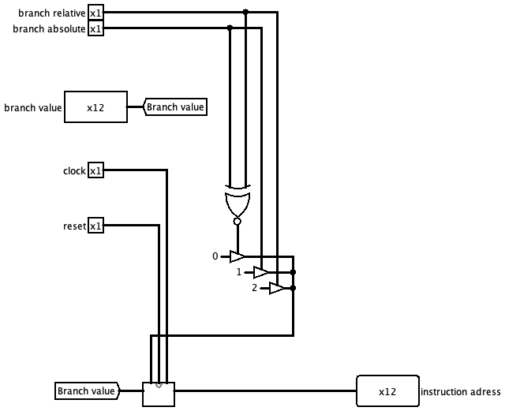
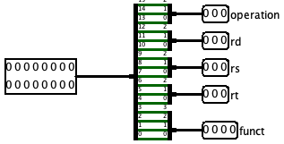
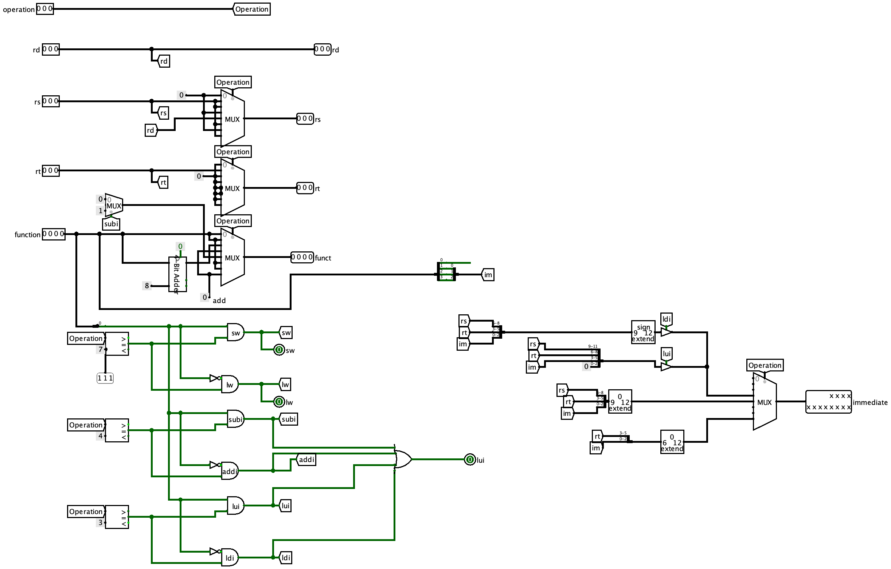
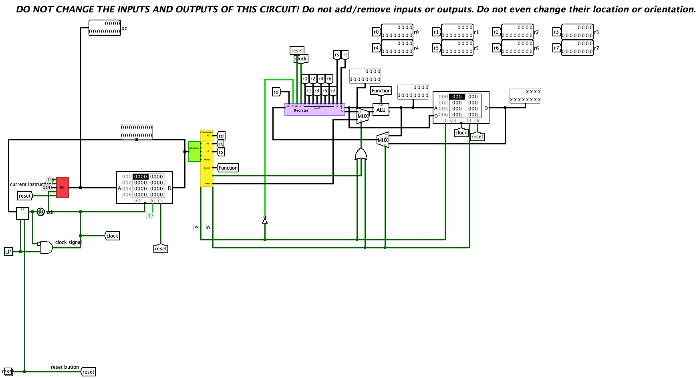

Titel: CA Project 5: Datapath
Dit verslag werd opgesteld door:
De oplossing bestaat uit de volgende bestanden:
Counter Dit is de counter die we hebben gebruikt in onze pc. We maken gebruik van een mux om de juiste actie uit te voeren. We maten de juiste waarde doorkomen aan de hand van buffers in onze pc. Zodat branch relative of branch absolute wordt uitgevoerd.  12-bit program counter:  Decoder: De decoder is bij ons zeer beknopt, we splitsen gewoon de 16-bit data die uit de instruction RAM komt op in de operation, rd, rs, rt en functie.  Controller: Omdat onze decoder zo beknopt is, is onze controller iets geavanceerder. We maken bij alles gebruik van de operation code zodat de juiste waarden worden doorgegeven. We hebben lw, sw en de OR van subi, addi, lui en ldi als outputs die ons gaan helpen in het datapad om de juiste waarden door te laten tijdens operaties. De immediate laten we door aan de hand van de operator die gegevens is.  Controller: Onze instruction RAM's output wordt bepaald door de PC, de output wordt dan verwerkt door de decoder en controller. Deze zorgen ervoor dat alle juiste waardes gebruikt worden. De immediate wordt doorgegeven aan de ALU in plaats van de Rs als lw, sw, lui, ldi, subbi of addi aanstaat. We zorgen er ook voor dat enkel write uit staat bij Sw, en bij al de rest aan. Datapad: 